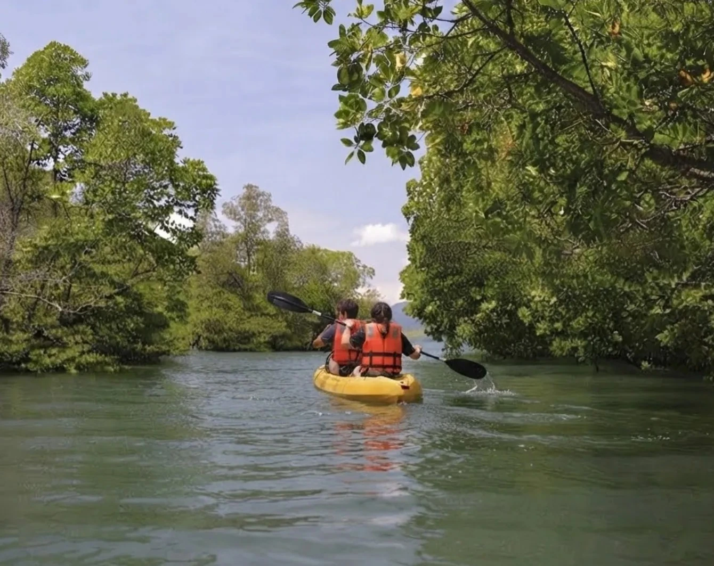
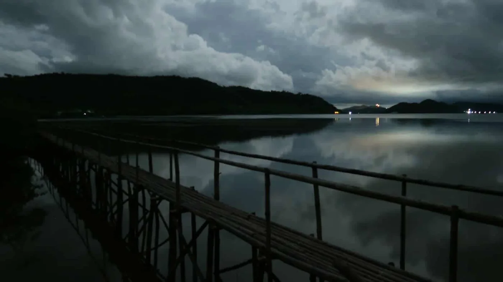
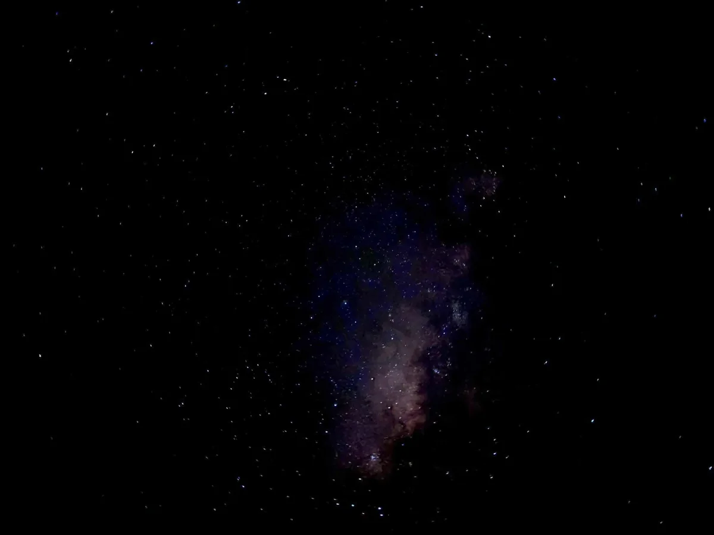
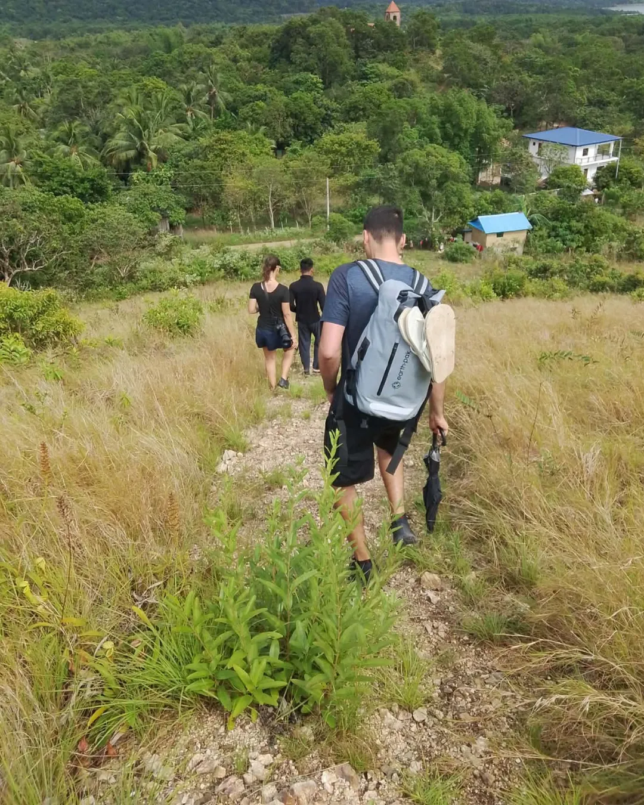
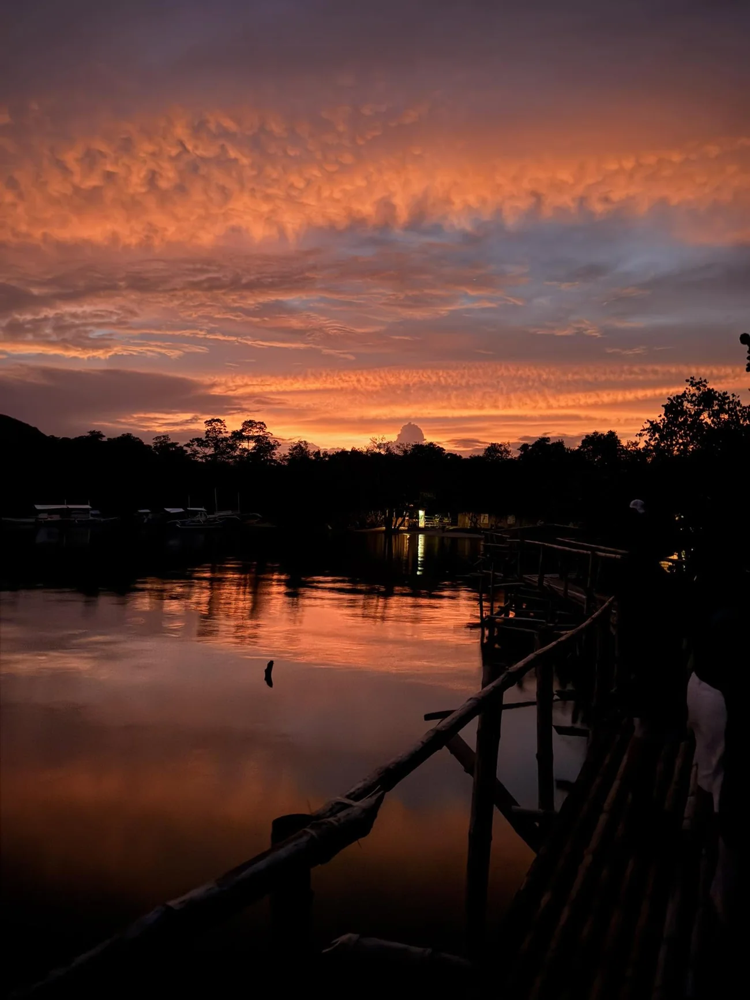
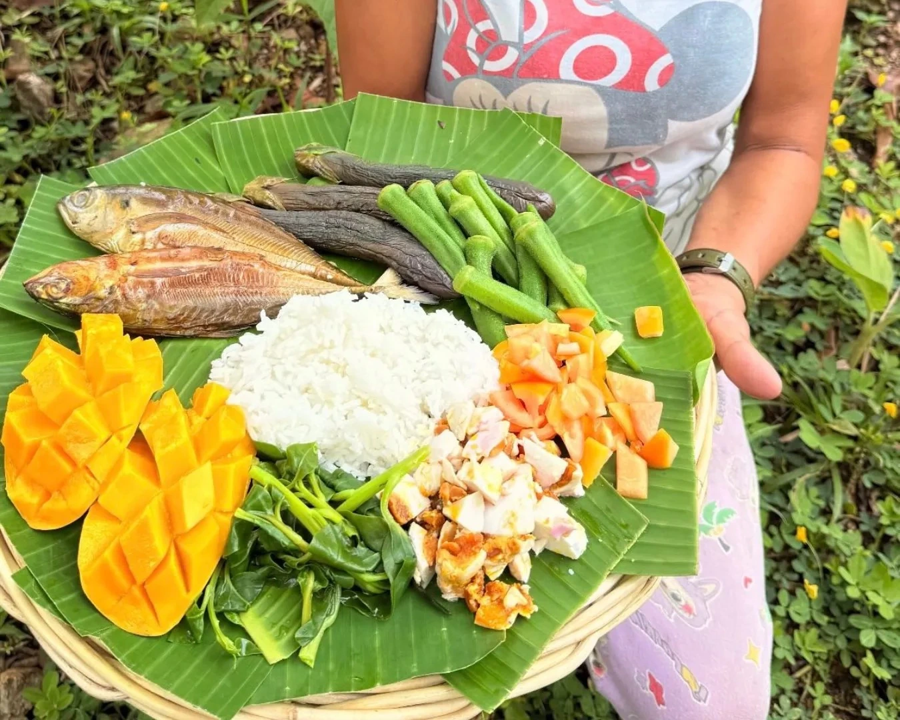

Mangrove Kayak
Paddle through mangrove-lined water and discover the park from a quieter perspective.
Discover the difference between four Kingfisher Park Beach activities and the separate BERAE Tour A/B guided experiences.
Choose from four individual Kingfisher Park Beach activities or take an extended BERAE tour combining nature, local livelihoods, farming and food security.
Daytime mangrove kayaking, an after-dark boardwalk, a separate night kayak, or a Complete Experience combining the beach activities. All are guided or staff-supervised as appropriate.

Paddle through mangrove-lined water and discover the park from a quieter perspective.

Take in the mangrove setting after sunset, with the chance to observe its fireflies.

Combine boardwalk viewing with night paddling and the possibility of seeing bioluminescent plankton.
Combine the three beach activities — daytime mangrove kayak, Firefly Boardwalk and Fireflies + Night Kayak — in one fuller visit, subject to compatible sessions and conditions.
Beach activity rates: Mangrove Kayak ₱600, Firefly Boardwalk ₱400, Fireflies + Night Kayak ₱600, or The Complete Experience ₱1,000 per person (before any applicable family rate). Beach hours: weekdays 1–9 PM; weekends 5–9 PM by advance arrangement. Staff are on call.
ASK ABOUT INDIVIDUAL ACTIVITIESSeparate from the beach-only activities, the BERAE tours combine trail walks, biodiversity, regenerative agriculture, food security, community life and included meals.

8:00 AM–5:00 PM · nine guided stops across nature, agriculture, community life and food security; meals included.

8:00 AM–7:00 PM · everything in Tour A, with extended evening-water experiences and opportunities to observe fireflies and bioluminescent plankton.
The tour prices reflect a guided day combining multiple landscape, community and food experiences. Tour B extends the day into the mangroves and evening wildlife setting.
Nine Nature Trail stops, birdwatching, regenerative agriculture, community experiences and included meals.
Everything in Tour A plus mangrove paddling, sunset and opportunities to observe fireflies and bioluminescent plankton.
Tour A (8 AM–5 PM) and Tour B (8 AM–7 PM) involve walking and outdoor activity. Some visitors find the hills challenging; ask Ma’am Honey about mobility, pace and food needs. Transport is not provided; meals are included.
Ages 0–6 join free without food; ages 7–10 pay half the applicable full-rate tour tier; ages 11+ pay the full rate. Kayaking eligibility and child supervision remain subject to staff safety requirements.

The order and timing of stops depend on group pace and conditions.
| Full-rate guests (11+) | Tour A / adult | Tour B / adult |
|---|---|---|
| 1 | ₱4,500 | ₱5,500 |
| 2 | ₱3,000 | ₱4,000 |
| 3 | ₱2,900 | ₱3,900 |
| 4 | ₱2,800 | ₱3,800 |
| 5 | ₱2,700 | ₱3,700 |
| 6 | ₱2,600 | ₱3,600 |
| 7 | ₱2,500 | ₱3,500 |
| 8 | ₱2,400 | ₱3,400 |
| 9 | ₱2,300 | ₱3,300 |
| 10 | ₱2,200 | ₱3,200 |
| 11+ | ₱2,200 | ₱3,200 |
Guests aged 11 and above pay full rates and count toward the full-rate guest group tier. Ages 7–10 pay half that applicable rate, with meals. Ages 0–6 are free without food and do not count toward the tier. All groups are subject to safe daily and activity capacity.
BERAE Tour A and Tour B include meals and emphasize regenerative agriculture and food security. Transport to the park is not provided. For 11+ full-rate guests, the 10-person tier continues subject to available capacity. Early Riser is optional, ₱150/head or ₱300 solo, payable on site.
REVIEW VISIT & PAYMENT POLICY ↗The park is open seven days a week. Beach visits require advance coordination, particularly on weekends; BERAE tours have fixed day ranges. Full payment is online when a booking is confirmed through Wix Bookings, not through this prototype.
PLAN YOUR VISIT →